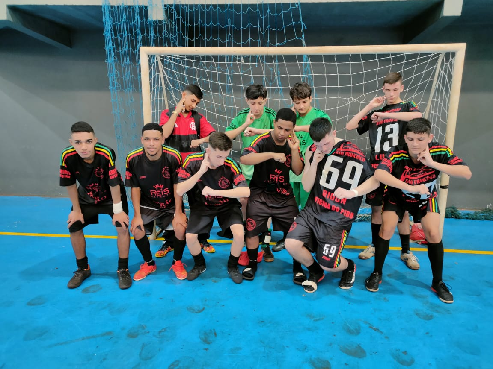
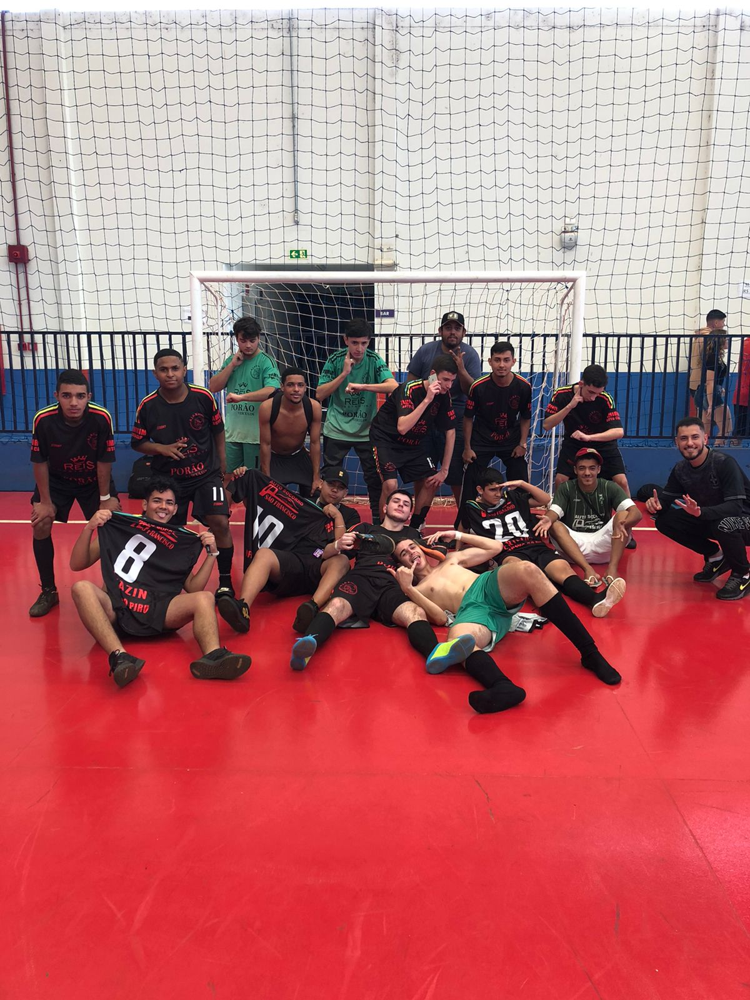

Neste final de semana ouve uma partida amistosa entre doutor Camargo e ivatuba , localizado no ginásio "Camargão". O jogo ocorreu as 14:00 horas,onde doutor Camargo saio com a Vitória do clássico com o placar de 7x1. Com gols de Pedro Rigon (3) ,Eric(1) ,Luan(1) e Rhauny(2), contra apenas um gol do atleta Hugo, de ivatuba. Ivatuba teve uma grande decepção com a derrota, e deixou muito a desejar o seu futebol, e terá uma nova chance de tentar a vitória, com a próxima disputa em casa no dia 20/08/2022 as 14:00 horas no Ginásio municipal Nivaldo Trevisan . 
Já o Segundo jogo ocorreu em Ivatuba, NO ginaasio de Esportes , onde DR Camargo saiu novamente com a vitoria por 6x2 no time da casa, Ivatuba 